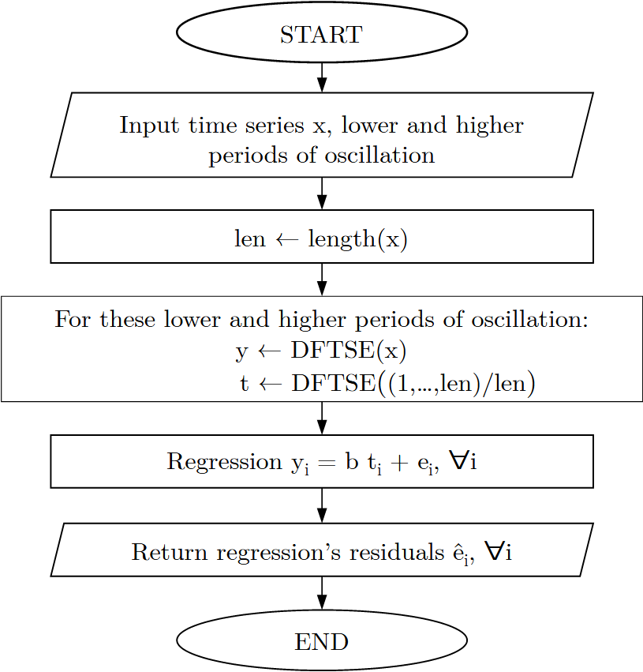

Corbae and Ouliaris (2006) Frequency Domain Filter in R
Install
The official (CRAN) version of the package can be installed using
install.packages("corbouli")Alternatively, the development version of the package can be installed via
if (!require(remotes)) install.packages("remotes")
remotes::install_github("cadam00/corbouli")Citation
To cite the official (CRAN) version of the package, please use
Adam, C. (2024). corbouli: Corbae-Ouliaris Frequency Domain Filtering. R package version 0.1.0. Available at https://doi.org/10.32614/CRAN.package.corbouli.
Alternatively, to cite the latest development version, please use:
Adam, C. (2024). corbouli: Corbae-Ouliaris Frequency Domain Filtering (v0.1.1). Zenodo. Available at https://doi.org/10.5281/zenodo.13740089
Corbae-Ouliaris Frequency Domain Filtering
Corbae and Ouliaris (2006) Frequency Domain Filter is used for extracting cycles from either both on stationary and non-stationary time series. This is one approximation of the ideal band pass filter of the series.
The main idea of this filtering algorithm is illustrated in Fig. 1 and 2. The main idea of the DFTSE subroutine is shown in Fig. 1, where it includes DFT (Discrete Fourier Transform) of the times series, then frequencies lower and higher by periods of oscillation thresholds are assigned to zero and finally perform IDFT (Inverse Discrete Fourier Transform). Additional implementation details of this subroutine can be found at source code of the function corbouli::dftse.

Fig. 1: DFTSE subroutine.
The final algorithm is described in Fig. 2, where filtered series is the residuals of the regression of over .

Fig. 2: Corbae-Ouliaris main algorithm.
The minimum and the maximum periods of oscillation should be determined when using this method, so as to irrelevant to filtering frequencies are removed. As an example from Shaw (1947), a business cycle usually has a lower period of 1.5 years and a higher period of 8 years. This information can be used while for filtering as expressed from the following Table 1.
| Sample Frequency | Lower | Higher |
| Month | 18 | 96 |
| Quarter | 6 | 32 |
| Year | 2 | 8 |
Table 1: Lower and higher periods of oscillation.
The same table in fragments of can be transformed into the Table 2 using the and . For instance, for quarterly sampled time series, we have and .
| Sample Frequency | Lower | Higher |
| Month | 0.0208 | 0.1111 |
| Quarter | 0.0625 | 0.3333 |
| Year | 0.25 | 1 |
Table 2: Low and high frequency in fragments of .
The longer the series, the more the long run frequency is expressed by a lower frequency as fragment of equal to 0. Moreover, the output gap can be expressed using higher frequency as fragment of equal to 1 (Ouliaris, 2009).
Example
For this example, the quarterly US GDP in billions of chained 2017 dollars (Seasonally adjusted) will be used.
# Import package to workspace
library(corbouli)
# Import "USgdp" dataset
data(USgdp)
plot(USgdp, main = "Quarterly US GDP in billions of chained 2017 dollars
(Seasonally adjusted)", ylab = "", lwd = 2)

Fig. 3: USgdp dataset.
# Extract cycles
co <- corbae_ouliaris(USgdp, low_freq = 0.0625, high_freq = 0.3333)
# Plot cycles of filtered series
plot(co,
main = "Corbae-Ouliaris FD Filter cycles for USgdp",
ylab = "",
lwd = 2)

Fig. 4: Corbae-Ouliaris FD Filter cycles.
# Plot real data with the ones after removing cycles
# Removing cycles from original data
USgdp_rmco <- USgdp - co
# Plot Original vs Decycled data
plot(USgdp, main = "Quarterly US GDP in billions of chained 2017 dollars
(Seasonally adjusted)", col = "black", lwd = 2, ylab = "")
lines(USgdp_rmco, col = adjustcolor("red", alpha.f = 0.7), lwd = 2)
legend(x = "topleft", lwd = 2, text.font = 2,
col= adjustcolor(c("black","red"), alpha.f = 0.7),
legend=c("Original data", "Decycled data"))

Fig. 5: Original vs Decycled USgdp data.
As noted by Ouliaris (2009), for setting high_freq = 1 the output gap series than business cycle one will have higher volatility (Fig. 6).
# Extract output gap
og <- corbae_ouliaris(USgdp, low_freq = 0.0625, high_freq = 1)
# Plot Business cycle vs Output gap
plot(co, main = "Business cycle vs Output gap for USgdp",
col = adjustcolor("blue", alpha.f = 0.7), lwd = 2, ylab = "")
lines(og, col = adjustcolor("orange", alpha.f = 0.7), lwd = 2)
legend(x = "bottomleft", lwd = 2, text.font = 2,
col= adjustcolor(c("blue","orange"), alpha.f = 0.7),
legend=c("Business cycle", "Output gap"))

Fig. 6: Business cycle vs Output gap.
References
Baxter, M., & King, R. (1999), Measuring Business Cycles: Approximate Band-Pass Filters for Economic Time Series. Review of Economics and Statistics 81(4), pp. 575-593.
Corbae, D., Ouliaris, S., & Phillips, P. (2002), Band Spectral Regression with Trending-Data. Econometrica 70(3), pp. 1067-1109.
Corbae, D. & Ouliaris, S. (2006), Extracting Cycles from Nonstationary Data,in Corbae D., Durlauf S.N., & Hansen B.E. (eds.). Econometric Theory and Practice: Frontiers of Analysis and Applied Research. Cambridge: Cambridge University Press, pp. 167–177. https://doi.org/10.1017/CBO9781139164863.008.
Ouliaris, S. (2009), Ideal Band Pass Filter For Stationary/Non-Stationary Series.
Pérez Pérez, J. (2011), COULIARI: Stata module to implement Corbae-Ouliaris frequency domain filter to time series data. Statistical Software Components, S457218, Boston College Department of Economics.
Shaw, E.S. (1947), Burns and Mitchell on Business Cycles. Journal of Political Economy, 55(4): pp. 281-298. https://doi.org/10.1086/256533.